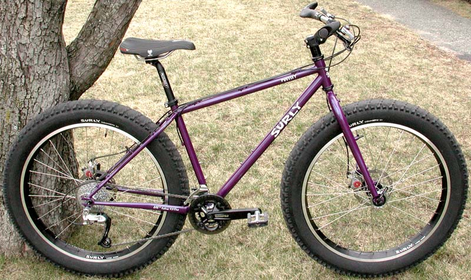

Overview¶

Surly Pugsley prototype (photo via Wikimedia Commons).
{kind=link}
The Surly Pugsley, introduced in 2005, was the world’s first mass-produced fat bike, built for ultra-wide tires that float over soft terrain. Its origins lie in extreme Alaskan endurance races like the Iditarod Trail Invitational, where riders literally welded rims together and stitched tires to conquer deep snow. Surly commercialized those garage-lab innovations with the 3.7″ Endomorph tire and 65 mm Large Marge rim, transforming a niche experiment into a practical snow-and-sand machine you could buy at your local shop.
Riding deep winter drifts (photo via Fat-Bike.com).
To overcome the lack of fat-bike-specific parts, Surly engineered a 17.5 mm frame offset to clear a 26 × 3.8″ tire on a standard 135 mm hub, and borrowed a 100 mm bottom-bracket shell (from downhill bikes) so a regular crankset would fit. Even the front and rear wheels were interchangeable—a clever fail-safe on remote expeditions. Designed to go “where there is no road or trail” (see Surly Bikes blog), the Pugsley unlocked snow, sand, bogs, beaches, and beyond. Its go-anywhere ethos and simple, robust design sparked the modern fat-bike movement—every Beargrease, Fatboy, and Mukluk today owes a debt to this trailblazing classic.